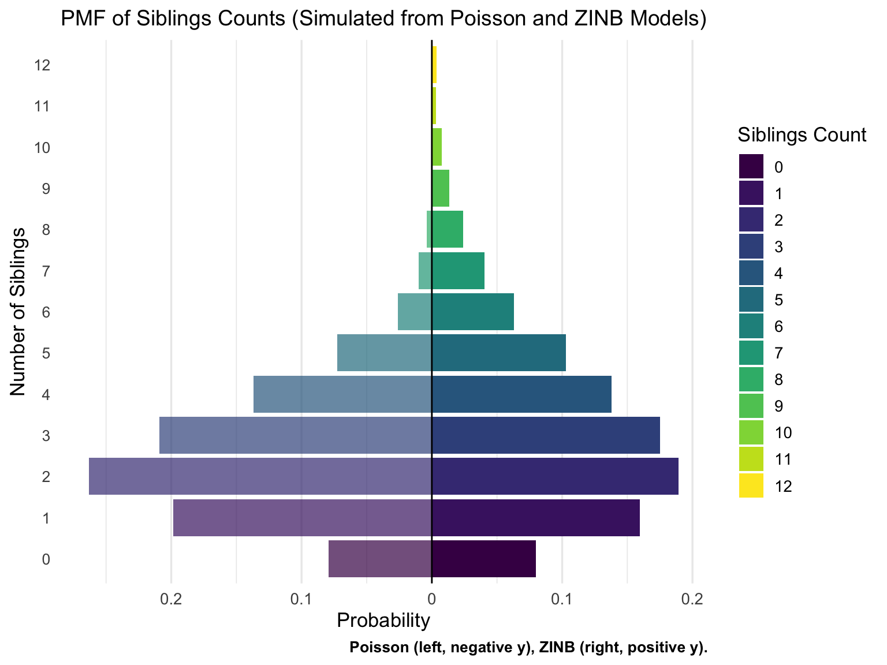

Last updated: 2025-07-04
Checks: 7 0
Knit directory: PODFRIDGE/
This reproducible R Markdown analysis was created with workflowr (version 1.7.1). The Checks tab describes the reproducibility checks that were applied when the results were created. The Past versions tab lists the development history.
Great! Since the R Markdown file has been committed to the Git repository, you know the exact version of the code that produced these results.
Great job! The global environment was empty. Objects defined in the global environment can affect the analysis in your R Markdown file in unknown ways. For reproduciblity it’s best to always run the code in an empty environment.
The command set.seed(20230302) was run prior to running
the code in the R Markdown file. Setting a seed ensures that any results
that rely on randomness, e.g. subsampling or permutations, are
reproducible.
Great job! Recording the operating system, R version, and package versions is critical for reproducibility.
Nice! There were no cached chunks for this analysis, so you can be confident that you successfully produced the results during this run.
Great job! Using relative paths to the files within your workflowr project makes it easier to run your code on other machines.
Great! You are using Git for version control. Tracking code development and connecting the code version to the results is critical for reproducibility.
The results in this page were generated with repository version be6c40d. See the Past versions tab to see a history of the changes made to the R Markdown and HTML files.
Note that you need to be careful to ensure that all relevant files for
the analysis have been committed to Git prior to generating the results
(you can use wflow_publish or
wflow_git_commit). workflowr only checks the R Markdown
file, but you know if there are other scripts or data files that it
depends on. Below is the status of the Git repository when the results
were generated:
Ignored files:
Ignored: .DS_Store
Ignored: .Rhistory
Ignored: .Rproj.user/
Ignored: analysis/.DS_Store
Ignored: code/.DS_Store
Ignored: data/.DS_Store
Ignored: output/.DS_Store
Untracked files:
Untracked: data/Murphy_combined_data.csv
Untracked: data/internal/
Untracked: data/raw/
Untracked: data/regression_data/Murphy_combined_data.csv
Untracked: output/SDIS_racial_composition.csv
Untracked: output/pmf_sibling_counts.csv
Untracked: output/pmf_sibling_counts.png
Unstaged changes:
Modified: analysis/codis_regression.Rmd
Modified: analysis/forensic_databases.Rmd
Modified: analysis/racial_proportion.Rmd
Modified: analysis/regression.Rmd
Modified: data/final_CODIS_data.csv
Note that any generated files, e.g. HTML, png, CSS, etc., are not included in this status report because it is ok for generated content to have uncommitted changes.
These are the previous versions of the repository in which changes were
made to the R Markdown (analysis/fert_model.Rmd) and HTML
(docs/fert_model.html) files. If you’ve configured a remote
Git repository (see ?wflow_git_remote), click on the
hyperlinks in the table below to view the files as they were in that
past version.
| File | Version | Author | Date | Message |
|---|---|---|---|---|
| Rmd | be6c40d | Junhui He | 2025-07-04 | wflow_publish("analysis/fert_model.Rmd") |
We extract the fertility information for U.S. women aged 50‑59 in the 1990 Census. Women aged 50–59 in the 1990 U.S. Census were born between 1931 and 1940. Assuming a typical childbearing age range of 25–45, their children would have been born between approximately 1956 and 1985. Therefore, the fertility distributions and relative counts estimated from this cohort primarily reflect the family-building behaviors and social contexts of the mid-1950s through the mid-1980s. We filter to Black/African American and White American groups as these are of interest to our paper.
path <- file.path(".", "data")
prop_race_year <- file.path(path, "proportions_table_by_race_year.csv")
data_filter <- file.path(path, "data_filtered_recoded.csv")
## original script loads both; we only need mother_data for this step
mother_data <- read_csv(data_filter, show_col_types = FALSE)mother_data already contains:
YEAR – Census year (1960,1970,1980,1990)AGE – respondent ageRACE – recoded as “White” or “Black/African
American”chborn_num – completed fertility (children ever
born)cohort <- mother_data %>%
filter(YEAR == 1990,
AGE >= 50, AGE <= 59,
RACE %in% c("White", "Black/African American")) %>%
mutate(RACE = droplevels(factor(RACE))) %>% dplyr::select("YEAR", "AGE", "RACE", "chborn_num")
cohort %>% count(RACE, name = "n_women")# A tibble: 2 × 2
RACE n_women
<fct> <int>
1 Black/African American 10945
2 White 96079kable(head(cohort, n = 15), caption = "Fertility data for U.S. women aged 50‑59 in the 1990 Census.")| YEAR | AGE | RACE | chborn_num |
|---|---|---|---|
| 1990 | 53 | White | 3 |
| 1990 | 52 | White | 3 |
| 1990 | 50 | White | 2 |
| 1990 | 59 | White | 2 |
| 1990 | 55 | White | 0 |
| 1990 | 53 | White | 3 |
| 1990 | 55 | White | 4 |
| 1990 | 58 | White | 3 |
| 1990 | 50 | White | 4 |
| 1990 | 54 | White | 0 |
| 1990 | 59 | White | 2 |
| 1990 | 57 | White | 3 |
| 1990 | 51 | White | 3 |
| 1990 | 50 | Black/African American | 4 |
| 1990 | 55 | White | 4 |
# Prepare individual-level sibling count
sibs_long <- cohort %>%
mutate(mother_id = row_number()) %>%
filter(chborn_num > 0) %>%
tidyr::uncount(chborn_num, .remove = FALSE) %>%
mutate(n_sib = chborn_num - 1)
kable(head(sibs_long, n = 15), caption = "Corresponding sibling data calculated from fertility data")| YEAR | AGE | RACE | chborn_num | mother_id | n_sib |
|---|---|---|---|---|---|
| 1990 | 53 | White | 3 | 1 | 2 |
| 1990 | 53 | White | 3 | 1 | 2 |
| 1990 | 53 | White | 3 | 1 | 2 |
| 1990 | 52 | White | 3 | 2 | 2 |
| 1990 | 52 | White | 3 | 2 | 2 |
| 1990 | 52 | White | 3 | 2 | 2 |
| 1990 | 50 | White | 2 | 3 | 1 |
| 1990 | 50 | White | 2 | 3 | 1 |
| 1990 | 59 | White | 2 | 4 | 1 |
| 1990 | 59 | White | 2 | 4 | 1 |
| 1990 | 53 | White | 3 | 6 | 2 |
| 1990 | 53 | White | 3 | 6 | 2 |
| 1990 | 53 | White | 3 | 6 | 2 |
| 1990 | 55 | White | 4 | 7 | 3 |
| 1990 | 55 | White | 4 | 7 | 3 |
Here we establish statistical models for the fertility distribution and sibling distribution. The fertility distribution describes the number of children per family, while the sibling distribution describes the number of siblings per person.
We model the number of children per family using a Poisson distribution and a zero inflated negative binomial distribution (ZINB), respectively.
The Poisson distribution is a common model for count data, particularly when the mean and variance are equal. However, it may not be suitable for fertility data, which often exhibit zero-inflation and overdispersion (variance greater than the mean). The Poisson distribution with mean fertility (\(\mu\)) is defined as: for a count \(k \geq 0\), \[P(num_{child}=k)=e^{-\mu}\frac{\mu^k}{k!},\] denoted by \(Poisson(\mu)\). The mean and variance of \(Poisson(\mu)\) are both \(\mu\).
The zero inflated negative binomial distribution with parameters mean fertility (\(\mu\)), dispersion/size (\(\theta\)), and zero‑inflation probability (\(\pi_0\))—denoted as \(ZINB(\mu, \theta, \pi_0)\)—is defined as: for a count \(k \geq 0\), \[P(num_{child}=k)=\begin{cases} \pi_0 + (1-\pi_0)p^{\theta} & \text{if } k=0, \\ (1-\pi_0)\binom{k+\theta-1}{k}(1-p)^k p ^{\theta} & \text{if } k \geq 1, \end{cases}\] where \(p = \frac{\theta}{\mu+\theta}\) represents the success probability of the negative binomial distribution.
According to the definition of the negative binomial distribution, the mean and variance of \(NB(\mu,\theta)\) are given by \(\mu\) and \(\mu + \frac{\mu^2}{\theta}\), respectively. Therefore, the mean and variance of \(ZINB(\mu, \theta, \pi_0)\) are defined by \(\mu(1-\pi_0)\) and \(\mu(1-\pi_0) + \frac{\mu^2(1-\pi_0)}{\theta}+\mu^2\pi_0(1-\pi_0)\), respectively.
The sibling distribution can be derived from the fertility distribution. For any count \(k \geq 0\), the probability that an individual has \(k\) siblings is proportional to the probability that their mother has \(k+1\) children, multiplied by the number of ways the individual could be one of those children. Therefore, the sibling distribution satisfies: \[P(num_{sib}=k) \propto (k+1)P(num_{child}=k+1).\]
If the fertility distribution is \(Poisson(\mu)\), then the sibling distribution is given by: for a count \(k \geq 0\), \[P(num_{sib}=k) \propto (k+1)e^{-\mu}\frac{\mu^{k+1}}{(k+1)!} = e^{-\mu}\frac{\mu^{k+1}}{k!}\propto e^{-\mu}\frac{\mu^k}{k!},\] which is also a Poisson distribution with mean \(\mu\).
If the fertility distribution is \(ZINB(\mu, \theta, \pi_0)\), then the sibling distribution is given by: for a count \(k \geq 0\), \[\begin{align*} P(num_{sib}=k) & \propto (1-\pi_0)(k+1)\binom{k+\theta}{k+1}(1-p)^{k+1} p^{\theta} \\ & = (1-\pi_0)(k+1)\frac{(k+\theta)!}{(k+1)!(\theta-1)!}(1-p)^{k+1} p^{\theta} \\ & \propto \frac{\theta(1-p)}{p} \frac{(k+\theta)!}{k!\theta!}(1-p)^k p^{\theta+1} \\ & \propto \binom{k+\theta}{k}(1-p)^k p^{\theta+1}, \\ \end{align*}\] where \(p = \frac{\theta}{\mu+\theta}\). Therefore, the sibling distribution is a negative binomial distribution with parameters mean fertility (\(\frac{\mu(\theta+1)}{\theta}\)), dispersion/size (\(\theta+1\)), denoted as \(NB(\frac{\mu(\theta+1)}{\theta}, \theta+1)\). The variance is \(\frac{\mu(\theta+1)}{\theta} + \frac{\mu^2(\theta+1)}{\theta^2}\).
fit_fert <- function(dat) {
## Poisson model
pois <- glm(chborn_num ~ 1, family = poisson, data = dat)
## Zero‑inflated negative binomial model
zinb <- zeroinfl(chborn_num ~ 1 | 1, data = dat, dist = "negbin")
tibble(
Model = c("Poisson", "ZINB"),
mu = c(exp(coef(pois)[1]), ## log‑link → exp() gives mean
exp(zinb$coefficients$count[1])),
size = c(Inf, ## dispersion θ; Inf = Poisson
zinb$theta),
pi0 = c(0, ## zero‑inflation prob.
plogis(zinb$coefficients$zero[1]))
)
}
param_fert <- cohort %>%
group_by(RACE) %>%
group_modify(~ fit_fert(.x)) %>%
ungroup()kable(param_fert, digits = 3, caption = "Fertility‑model parameter estimates for women aged50‑59 (1990 Census)")| RACE | Model | mu | size | pi0 |
|---|---|---|---|---|
| Black/African American | Poisson | 3.724 | Inf | 0.000 |
| Black/African American | ZINB | 3.932 | 4.289 | 0.053 |
| White | Poisson | 2.895 | Inf | 0.000 |
| White | ZINB | 3.079 | 257628.938 | 0.060 |
cal_mean_var <- function(model, mu, size, pi0) {
if (model == "Poisson") {
mean_fert = mu
var_fert = mu
mean_sib = mu
var_sib = mu
} else if (model == "ZINB") {
mean_fert = mu * (1 - pi0)
var_fert = mu * (1 - pi0) + (mu^2 * (1 - pi0) / size) + (mu^2 * pi0 * (1 - pi0))
mean_sib = mu * ((size + 1) / size)
var_sib = mu * ((size + 1) / size) + (mu^2 * ((size + 1) / size) / size)
}
tibble(
Model = model,
Mean_Fertility = mean_fert,
Variance_Fertility = var_fert,
Mean_Sibling = mean_sib,
Variance_Sibling = var_sib
)
}
mean_var_fitted <- param_fert %>%
rowwise() %>%
do(cal_mean_var(.$Model, .$mu, .$size, .$pi0)) %>%
ungroup()
mean_var = data.frame(
Race = rep(c("Black/African American", "White"), each = 3),
Model = rep(c("Data", "Poisson", "ZINB"), 2),
Mean_Fertility = c(mean(cohort$chborn_num[cohort$RACE == "Black/African American"]), mean_var_fitted$Mean_Fertility[1], mean_var_fitted$Mean_Fertility[2], mean(cohort$chborn_num[cohort$RACE == "White"]), mean_var_fitted$Mean_Fertility[3], mean_var_fitted$Mean_Fertility[4]),
Variance_Fertility = c(var(cohort$chborn_num[cohort$RACE == "Black/African American"]), mean_var_fitted$Variance_Fertility[1], mean_var_fitted$Variance_Fertility[2], var(cohort$chborn_num[cohort$RACE == "White"]), mean_var_fitted$Variance_Fertility[3], mean_var_fitted$Variance_Fertility[4]),
Mean_Sibling = c(mean(sibs_long$n_sib[sibs_long$RACE == "Black/African American"]), mean_var_fitted$Mean_Sibling[1], mean_var_fitted$Mean_Sibling[2], mean(sibs_long$n_sib[sibs_long$RACE == "White"]), mean_var_fitted$Mean_Sibling[3], mean_var_fitted$Mean_Sibling[4]),
Variance_Sibling = c(var(sibs_long$n_sib[sibs_long$RACE == "Black/African American"]), mean_var_fitted$Variance_Sibling[1], mean_var_fitted$Variance_Sibling[2], var(sibs_long$n_sib[sibs_long$RACE == "White"]), mean_var_fitted$Variance_Sibling[3], mean_var_fitted$Variance_Sibling[4])
)
kable(mean_var, digits = 3, caption = "Mean and variance of fertility and sibling distributions from the fitted models and data.")| Race | Model | Mean_Fertility | Variance_Fertility | Mean_Sibling | Variance_Sibling |
|---|---|---|---|---|---|
| Black/African American | Data | 3.724 | 7.742 | 4.803 | 7.971 |
| Black/African American | Poisson | 3.724 | 3.724 | 3.724 | 3.724 |
| Black/African American | ZINB | 3.724 | 7.911 | 4.848 | 9.293 |
| White | Data | 2.895 | 3.352 | 3.053 | 3.648 |
| White | Poisson | 2.895 | 2.895 | 2.895 | 2.895 |
| White | ZINB | 2.895 | 3.428 | 3.079 | 3.079 |
Based on the table of mean and variance, we can see that the fertility data exhibits overdispersion (variance greater than mean), especially for Black/African American. The Poisson Model assumes equal mean and variance, which does not fit the data well. The ZINB Model accounts for overdispersion and zero-inflation, providing a better fit to the data. The ZINB model’s mean and variance estimates for both fertility and sibling distributions align more closely with the observed data, particularly for the Black/African American group, where the Poisson model fails to capture the higher variance. Nevertheless, both models yield the same mean fertility counts, which is equal to the sample mean of fertility data.
In this section, we simulate the fertility and sibling counts based on the Poisson and ZINB distributions, respectively. We then compare the empirical mean and variance of the simulated sibling data with the theoretical values derived from Section 2.
simulate_fert_sib <- function(model, mu, size, pi0, n_sim = 20000, max_kids = 20) {
if (model == "Poisson") {
# Simulate fertility counts from Poisson distribution
fert_counts <- pmin(rpois(n_sim, lambda = mu), max_kids)
} else if (model == "ZINB") {
# Simulate fertility counts from ZINB distribution
fert_counts <- ifelse(runif(n_sim) < pi0, 0, pmin(rnbinom(n_sim, size, mu = mu), max_kids))
}
# Simulate sibling counts based on fertility counts
fert_counts_tibble <- tibble(fert_counts = fert_counts)
sib_counts_tibble <- fert_counts_tibble %>%
filter(fert_counts > 0) %>%
tidyr::uncount(fert_counts, .remove = FALSE) %>%
mutate(sib_counts = fert_counts - 1)
sib_counts <- sib_counts_tibble$sib_counts
list(
model = model,
fert_counts = fert_counts,
sib_counts = sib_counts
)
}We run simulations for fertility means of 1.5, 2.0, 2.5, 3.0, 3.5, and 4.0 for both Poisson and ZINB models. Additionally, in ZINB models, we set the dispersion parameter \(\theta\) to 4, and the zero-inflation probability \(\pi_0\) to 0.05.
We compare the empirical mean and variance of sibling counts from the simulated data with the theoretical values. The comparison shows that the theoretical values align closely with the simulated results, confirming the correctness of our derivation.
means = c(1.5, 2.0, 2.5, 3.0, 3.5, 4.0)
size = 4
pi0 = 0.05
cal_mean_var_simulated <- function(sim_data) {
sib_counts <- sim_data$sib_counts
mean_sib = mean(sib_counts)
var_sib = var(sib_counts)
tibble(
Mean_Sibling = mean_sib,
Variance_Sibling = var_sib
)
}
# Poisson Model
simulated_poisson <- lapply(means, function(mu) {
simulate_fert_sib("Poisson", mu, Inf, 0)
})
simulated_poisson_results <- lapply(simulated_poisson, cal_mean_var_simulated) %>% bind_rows() %>%
mutate(Fertility_Parameter = sapply(means, function(mu) paste0("Fertility Mean = ", mu)),
Value_Type = "Simulated Poisson") %>% dplyr::select(Fertility_Parameter, Value_Type, everything())
threo_possion_results <- tibble(
Fertility_Parameter = sapply(means, function(mu) paste0("Fertility Mean = ", mu)),
Value_Type = "Theoretical Poisson",
Mean_Sibling = means,
Variance_Sibling = means
)
poisson_results <- bind_rows(simulated_poisson_results, threo_possion_results) %>%
arrange(Fertility_Parameter) %>%
mutate(Value_Type = factor(Value_Type, levels = c("Theoretical Poisson", "Simulated Poisson")))
kable(poisson_results, digits = 3, caption = "Mean and Variance of Sibling counts from simulations and theoretical values based on Poisson distribution.")| Fertility_Parameter | Value_Type | Mean_Sibling | Variance_Sibling |
|---|---|---|---|
| Fertility Mean = 1.5 | Simulated Poisson | 1.486 | 1.481 |
| Fertility Mean = 1.5 | Theoretical Poisson | 1.500 | 1.500 |
| Fertility Mean = 2 | Simulated Poisson | 1.997 | 1.988 |
| Fertility Mean = 2 | Theoretical Poisson | 2.000 | 2.000 |
| Fertility Mean = 2.5 | Simulated Poisson | 2.492 | 2.457 |
| Fertility Mean = 2.5 | Theoretical Poisson | 2.500 | 2.500 |
| Fertility Mean = 3 | Simulated Poisson | 3.004 | 2.951 |
| Fertility Mean = 3 | Theoretical Poisson | 3.000 | 3.000 |
| Fertility Mean = 3.5 | Simulated Poisson | 3.490 | 3.439 |
| Fertility Mean = 3.5 | Theoretical Poisson | 3.500 | 3.500 |
| Fertility Mean = 4 | Simulated Poisson | 3.986 | 3.992 |
| Fertility Mean = 4 | Theoretical Poisson | 4.000 | 4.000 |
# ZINB Model
simulated_zinb <- lapply(means, function(mu) {
simulate_fert_sib("ZINB", mu/(1-pi0), size, pi0)
})
simulated_zinb_results <- lapply(simulated_zinb, cal_mean_var_simulated) %>% bind_rows() %>%
mutate(Fertility_Parameter = sapply(means, function(mu) paste0("Fertility Mean = ", mu)),
Value_Type = "Simulated ZINB") %>% dplyr::select(Fertility_Parameter, Value_Type, everything())
mean_var_zinb <- lapply(means, function(mu) cal_mean_var("ZINB", mu/(1-pi0), size, pi0)) %>% bind_rows()
threo_zinb_results <- tibble(
Fertility_Parameter = sapply(means, function(mu) paste0("Fertility Mean = ", mu)),
Value_Type = "Theoretical ZINB",
Mean_Sibling = mean_var_zinb$Mean_Sibling,
Variance_Sibling = mean_var_zinb$Variance_Sibling
)
zinb_results <- bind_rows(simulated_zinb_results, threo_zinb_results) %>%
arrange(Fertility_Parameter) %>%
mutate(Value_Type = factor(Value_Type, levels = c("Theoretical ZINB", "Simulated ZINB")))
kable(zinb_results, digits = 3, caption = "Mean and Variance of Sibling counts from simulations and theoretical values based on ZINB distribution.")| Fertility_Parameter | Value_Type | Mean_Sibling | Variance_Sibling |
|---|---|---|---|
| Fertility Mean = 1.5 | Simulated ZINB | 1.990 | 2.848 |
| Fertility Mean = 1.5 | Theoretical ZINB | 1.974 | 2.753 |
| Fertility Mean = 2 | Simulated ZINB | 2.610 | 3.904 |
| Fertility Mean = 2 | Theoretical ZINB | 2.632 | 4.017 |
| Fertility Mean = 2.5 | Simulated ZINB | 3.269 | 5.454 |
| Fertility Mean = 2.5 | Theoretical ZINB | 3.289 | 5.454 |
| Fertility Mean = 3 | Simulated ZINB | 3.944 | 7.023 |
| Fertility Mean = 3 | Theoretical ZINB | 3.947 | 7.064 |
| Fertility Mean = 3.5 | Simulated ZINB | 4.628 | 8.922 |
| Fertility Mean = 3.5 | Theoretical ZINB | 4.605 | 8.847 |
| Fertility Mean = 4 | Simulated ZINB | 5.207 | 10.403 |
| Fertility Mean = 4 | Theoretical ZINB | 5.263 | 10.803 |
We generate discrete probability distributions for sibling counts based on both Poisson and ZINB models, with the y-axis representing the number of siblings and the x-axis representing the probability of having that many siblings. The fertility mean is set to 2.5, and the ZINB model has a dispersion parameter of 4 and a zero-inflation probability of 0.05.
library(viridisLite)
plot_pmf <- function(pmf_df) {
cats = sort(unique(pmf_df$sib_counts))
n_cat <- length(cats)
color_palette <- viridis(n_cat, option = "D")
df <- pmf_df %>%
mutate(y = ifelse(Model == "Poisson", -prob, prob),
count_cat = factor(sib_counts, levels = cats))
ggplot(df, aes(x = count_cat, y = y, fill = count_cat, alpha = Model)) +
geom_col() +
geom_hline(yintercept = 0, color = "black", size = 0.5) +
coord_flip() +
scale_y_continuous(labels = function(x) abs(x)) +
scale_fill_manual(values = color_palette, name = "Siblings Count") +
scale_alpha_manual(values = c("Poisson" = 0.7, "ZINB" = 1), guide = "none") +
labs(
title = "PMF of Siblings Counts (Simulated from Poisson and ZINB Models)",
x = "Number of Siblings",
y = "Probability",
caption = "Poisson (left, negative y), ZINB (right, positive y)."
) +
theme_minimal(base_size = 13) +
theme(
plot.title = element_text(size = 14, hjust = 0.5),
axis.text.y = element_text(size = 10),
plot.caption = element_text(face = "bold", size = 10),
legend.position = "right",
panel.grid.major.y = element_blank(),
panel.grid.minor.y = element_blank()
)
}# fertility parameters
mean = 2.5
size = 4
pi0 = 0.05
max_sibs = 12
# simulated data for fertility mean 2.5
simulated_data <- bind_rows(
tibble(sib_counts = simulate_fert_sib("Poisson", mean, Inf, 0)$sib_counts) %>%
mutate(Model = "Poisson"),
tibble(sib_counts = simulate_fert_sib("ZINB", mean/(1-pi0), size, pi0)$sib_counts) %>%
mutate(Model = "ZINB")
)
simulated_data$sib_counts <- ifelse(simulated_data$sib_counts > max_sibs, max_sibs, simulated_data$sib_counts)
pmf_data <- simulated_data %>%
count(Model, sib_counts, name = "n_counts") %>%
group_by(Model) %>%
mutate(prob = n_counts / sum(n_counts)) %>%
ungroup()
# write the pmf data to a csv file
write.csv(pmf_data, file = file.path("./output/pmf_sibling_counts.csv"), row.names = FALSE)plot_pmf(pmf_data)
ggsave(file = file.path("./output/pmf_sibling_counts.png"), width = 8, height = 6, dpi = 500)sum(pmf_data$n_counts[pmf_data$Model == "Poisson"])[1] 50557sum(pmf_data$n_counts[pmf_data$Model == "ZINB"])[1] 49626pmf_data$n_counts[pmf_data$Model == "Poisson"] / sum(pmf_data$n_counts[pmf_data$Model == "Poisson"]) [1] 0.0794153134 0.1986668513 0.2630496272 0.2089522717 0.1366774136
[6] 0.0723935360 0.0260300255 0.0102854204 0.0039163716 0.0003955931
[11] 0.0002175762pmf_data$n_counts[pmf_data$Model == "ZINB"] / sum(pmf_data$n_counts[pmf_data$Model == "ZINB"]) [1] 0.079655826 0.159714666 0.189336235 0.175150123 0.137730222 0.103010519
[7] 0.063051626 0.040462661 0.023939064 0.013299480 0.007758030 0.003385322
[13] 0.003506227
sessionInfo()R version 4.3.1 (2023-06-16)
Platform: aarch64-apple-darwin20 (64-bit)
Running under: macOS 15.5
Matrix products: default
BLAS: /Library/Frameworks/R.framework/Versions/4.3-arm64/Resources/lib/libRblas.0.dylib
LAPACK: /Library/Frameworks/R.framework/Versions/4.3-arm64/Resources/lib/libRlapack.dylib; LAPACK version 3.11.0
locale:
[1] en_US.UTF-8/en_US.UTF-8/en_US.UTF-8/C/en_US.UTF-8/en_US.UTF-8
time zone: America/Detroit
tzcode source: internal
attached base packages:
[1] stats graphics grDevices utils datasets methods base
other attached packages:
[1] viridisLite_0.4.2 ggplot2_3.5.2 knitr_1.50 pscl_1.5.9
[5] MASS_7.3-60 readr_2.1.5 tidyr_1.3.1 dplyr_1.1.4
[9] workflowr_1.7.1
loaded via a namespace (and not attached):
[1] utf8_1.2.5 sass_0.4.10 generics_0.1.4 stringi_1.8.7
[5] hms_1.1.3 digest_0.6.37 magrittr_2.0.3 evaluate_1.0.3
[9] grid_4.3.1 RColorBrewer_1.1-3 fastmap_1.2.0 rprojroot_2.0.4
[13] jsonlite_2.0.0 processx_3.8.6 whisker_0.4.1 ps_1.9.1
[17] promises_1.3.3 httr_1.4.7 purrr_1.0.4 scales_1.4.0
[21] textshaping_1.0.1 jquerylib_0.1.4 cli_3.6.5 crayon_1.5.3
[25] rlang_1.1.6 bit64_4.6.0-1 withr_3.0.2 cachem_1.1.0
[29] yaml_2.3.10 parallel_4.3.1 tools_4.3.1 tzdb_0.5.0
[33] httpuv_1.6.16 vctrs_0.6.5 R6_2.6.1 lifecycle_1.0.4
[37] git2r_0.36.2 stringr_1.5.1 bit_4.6.0 fs_1.6.6
[41] vroom_1.6.5 ragg_1.4.0 pkgconfig_2.0.3 callr_3.7.6
[45] pillar_1.10.2 bslib_0.9.0 later_1.4.2 gtable_0.3.6
[49] glue_1.8.0 Rcpp_1.0.14 systemfonts_1.2.3 xfun_0.52
[53] tibble_3.2.1 tidyselect_1.2.1 rstudioapi_0.17.1 farver_2.1.2
[57] htmltools_0.5.8.1 labeling_0.4.3 rmarkdown_2.29 compiler_4.3.1
[61] getPass_0.2-4